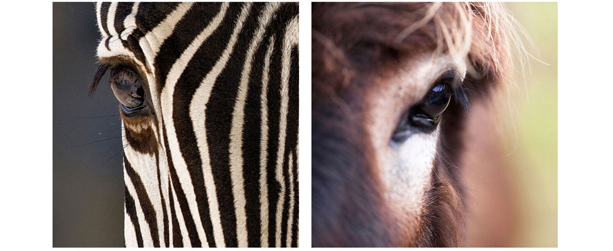

2024-09-04: New Discoveries: Domestic Cat and Dog Hepadnaviruses Added to Hepadnavirus-GLUE
Complete genome reference sequences of two novel hepadnaviruses, identified in domestic cats and domestic dogs, have been added to the Hepadnavirus-GLUE project.
In Australia, researchers identified a novel hepadnavirus in an immunocompromised domestic cat. This virus, tentatively named domestic cat hepadnavirus, was discovered through high-throughput transcriptome sequencing of tissues from cats infected with feline immunodeficiency virus (FIV). The virus was detected in 10% of FIV-infected cats and 3.2% of FIV-uninfected cats, indicating its potential role as a co-infecting agent in immunosuppressed animals. Phylogenetic analysis places the domestic cat hepadnavirus as a highly divergent member of the mammalian orthohepadnaviruses, marking the first time a hepadnavirus has been found in a carnivore or companion animal.
Following this discovery, scientists working in Italy hypothesized that dogs might also harbor hepadnaviruses. Testing of canine serum samples revealed the presence of hepadnavirus DNA in 6.3% of the samples, with a high degree of similarity (about 98% nucleotide identity) to the domestic cat hepadnavirus. Although the viral load in dogs was generally low, altered hepatic markers were observed, suggesting a potential impact on canine health.
These discoveries expand our understanding of the diversity of the Hepadnaviridae family and open up new avenues for research into the transmission, evolution, and health implications of these viruses in companion animals. They imply that many more hepadnavirus species remain to be identified in mammals. The Hepadnavirus-GLUE project can facilitate comparative genomics investigations of these viruses.
2021-04-30: Incorporating EqHBV into Hepadnaviridae-GLUE

The identification of EqHBV in zebras and donkeys offers unique opportunities for comparative studies of hepadnaviruses.
The recent discovery of Equine Hepatitis B Virus (EqHBV) in zebras and donkeys presents exciting new opportunities for comparative research within the Hepadnaviridae family. To facilitate these studies, we have integrated EqHBV into the Hepadnaviridae-GLUE resource.
2021-03-15: Hepadnavirus-GLUE project published
Hepadnavirus-GLUE is the second broadly-scoped GLUE project to be published by the Gifford lab.